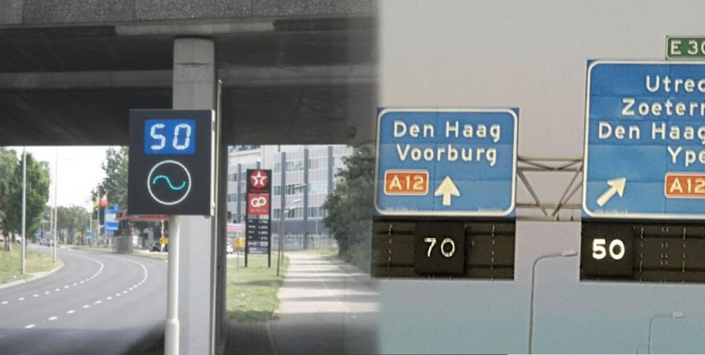
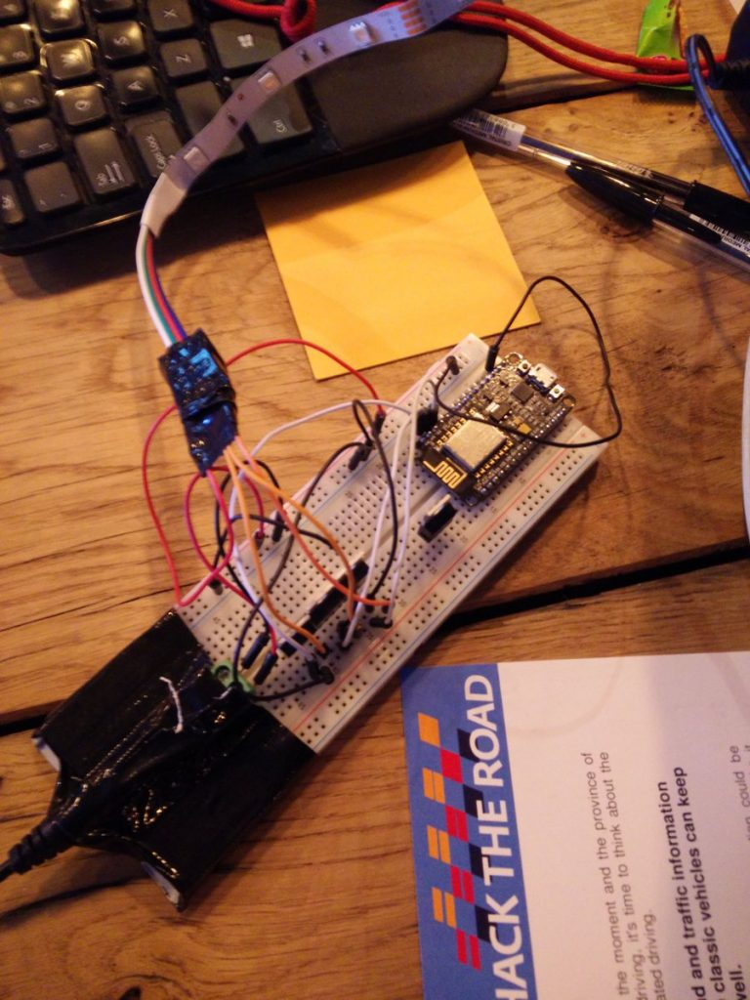

This weekend we got the second place in the Hack the Road Hackathon with our idea to let connected vehicles lead other vehicles through a “green wave”. As there will be a long period in which smart vehicles and “dumb” vehicles drive through the same streets, building this system would reduce a lot of traffic problems in the city without for a low price!
The green wave
In traffic, a green wave is a phenomenon that occurs when series of traffic lights are green when you approach them. Riding a green wave, you never have to stop for a red traffic light. As stopping and accelerating takes a lot of time and wastes energy, such a green wave is beneficial for you and the road users behind you. If you know your distance to the next intersection and the time it will take for the traffic sign to become green you can calculate your ideal speed, and keep driving this speed. Sometimes, by driving a little slower, you actually are quicker at your destination, with more fuel to spare.

{kind=link}
Existing solutions
A few intersections in the Netherlands have traffic signs that indicate what speed you need to drive to hit the next green light. Unfortunately, many people ignore these. Perhaps people don’t pay attention to them, perhaps because they don’t understand what the signs mean.
We have the same problem with traffic jams. In the Netherlands, we have so-called “matrix signs” above the road that indicate your maximum speed. If there is a traffic jam up ahead the matrix signs try to slow people down to prevent the “shockwave” traffic jams you often encounter. Unfortunately, almost everyone ignores these signs. Many people don’t understand them, and it’s not clear that abiding these signals will result in you waiting less.
{kind=link}
Using vehicles AS infrastructure
The idea we came up with during the Hack the Road hackathon was to use autonomous/smart/connected vehicles to indicate where the green wave starts and ends. These vehicles are able to request the time-to-green and time-to-red of upcoming intersections from an API. They are also able to determine their distance to this intersection using GPS and an internal map. If they use this information to slow down or speed up to their ideal speed it would be great if other drivers could benefit from this knowledge! We proposed adding a simple light on the back of each vehicle to signal this to other users!
This photoshopped image shows how we envision our prototype: a self-driving car is driving to a red light, but indicates that if you stay behind it you don’t have to brake for the red light.
{kind=link}
The prototype: a wifi chip and a LED strip
During the hackathon, we spent a lot of time thinking about how to signal green wave information to other drivers. We wanted to convey a simple message in a way that would both be understood and followed. We went for a LED strip and programmed a wifi chip to accept messages from our computers (I used a build similar to the one I made for my bed).
To get time-to-green and time-to-red information we interfaced with Dynniq’s API. We looked at one intersection in the Dutch city Helmond whose information was available to us during this weekend. As data currently came in in a continuous stream we had to write our own parsers in Python that found relevant data. We also made a “mock-up” datastream we could use during a demo and which we use in the video below.

{kind=link}
Putting a demonstration together
To demonstrate that building this product would be viable we had to show that our prototype was able to change color based on car location and live traffic information. We visualized the start and end of the green wave on a map, and let the color of our prototype change when we clicked on the map (indicating where our connected vehicle would drive).
Our tech demo is ready #hacktheroad #jointhegoldenwave pic.twitter.com/yx7fkyxLOK
— Roland Meertens (@rolandmeertens) September 16, 2017
Getting our product on the road
With our idea, prototype, and demonstration we got the second price of this hackathon! This means our project will be incubated by Dynniq: the company that provided us with the data we needed to make it work. To improve our product we have to wire the prototype directly into a car, improve the design of the lights, and think of a better way than wi-fi to receive traffic information in the car.
Perhaps even more important than building the prototype is talking to stakeholders. As we only placed second we don’t get to fly to California to talk with companies that could help us. If you read this and think you could help us with a prototype, connect us to relevant people, can provide funding, or have any questions: please send us an email! We think it’s possible to get the first units in cars by 2018!
Acknowledgements
We would like to thank the organisers of the Hackathon for all the effort they put into this event! The event was organised by the province of Noord Holland: thanks for inviting us over to come up with ideas for the roads in the Netherlands! We would also like to thank the BeMyApp staff who was really helpful during the event they set up: thank you very much Claire, Marc, and Su!